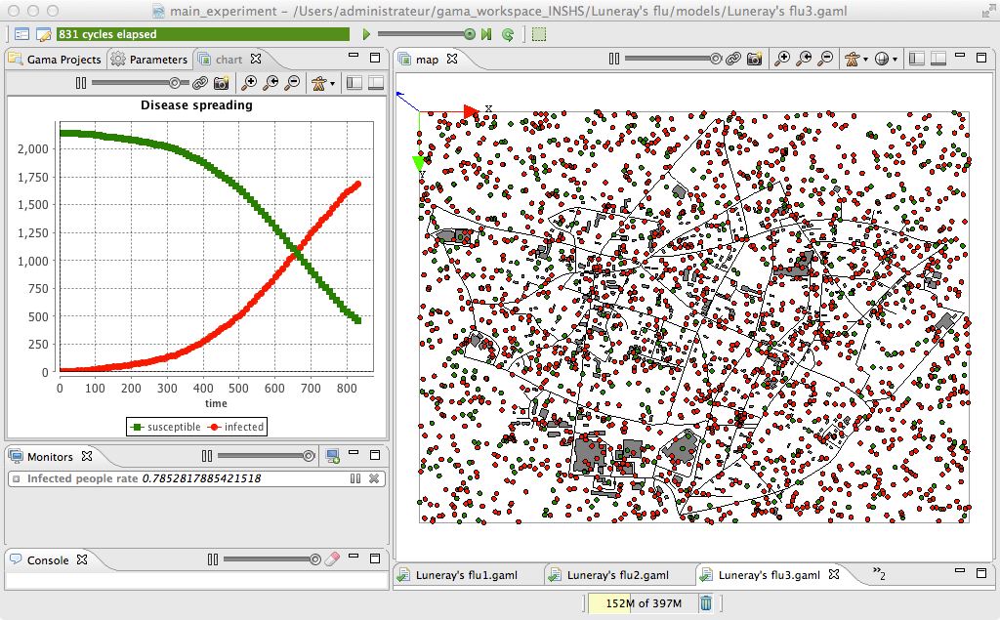

3. Importation of GIS data
This third step illustrates how load GIS data and to agentify them.

Formulation
- Define 2 new species that will just be displayed: road and building.
- Define new global attributes to load GIS data (shape file).
- Use the GIS data to create the road and building agents.
- Add the road and building agents to the display.
Model Definition
For this step, you will need to add the shapefiles of the roads and buildings inside the includes folder of the project. The shapefiles (and all the other files) can be found here.
species
In this model, we have to define two species of agents: the road agents and the building ones. These agents will not have a particular behavior, they will just be displayed. For each of this species we define an aspect called geom. As we want to represent the geometry of the agent, we then use the keyword draw that allow to draw a given geometry. In order to draw the geometry of the agent we use the attribute shape (which is a built-in attribute of all agents). The road will be displayed in black and the building in gray.
species road {
aspect geom {
draw shape color: #black;
}
}
species building {
aspect geom {
draw shape color: #gray;
}
}
global section
global variables
GAMA allows to automatically read GIS data that are formatted as shape files (or as OSM file). In our model, we define 2 shapefiles: one corresponding to the roads and the other ones to the buildings. Note that GAMA is able to manage the projection of the GIS data. In order to set the right size (and position) of the world geometry, we define its value as the envelope of the road shapefile (and no more a square of 1500 meters).
global{
//... other attributes
file roads_shapefile <- file("../includes/routes.shp");
file buildings_shapefile <- file("../includes/batiments.shp");
geometry shape <- envelope(roads_shapefile);
//... init
}
agentification of GIS data
In GAMA, the agentification of GIS data is very straightforward: it only requires to use the create command with the from facet to pass the shapefile. Each object of the shapefile will be directly used to instantiate an agent of the specified species. The reading of an attribute in a shapefile is also very simple. It only requires to use the with facet: the argument of this facet is a dictionary of which the keys are the names of the agent attributes and the value the read command followed by the name of the shapefile attribute.
In our model, we modify the init section in order to first create the road agents from the road shapefile, and the building agents from the building shapefile. Then, when creating people agents, we choose for them a random location inside a random building. Note that it is possible to execute a sequence of statements at the creation of agents by using a block ({...}) rather than a simple line (;) when using the create statement.
global {
// world variable definition
init{
create road from: roads_shapefile;
create building from: buildings_shapefile;
create people number:nb_people {
location <- any_location_in(one_of(building)); }
}
ask nb_infected_init among people {
is_infected <- true;
}
}
}
We used here the one_of operator that returns a random element from a list and the any_location_in operator that returns a random location inside a geometry.
experiment
Output
In the map display, we add the road and building species with their geom aspect just before the people species (in order to draw the people agents on the top of the roads and buildings).
experiment main_experiment type: gui {
... //parameter definition
output {
... //monitor definition
display map type: opengl{
species road aspect:geom;
species building aspect:geom;
species people aspect:circle;
}
... //chart display definition
}
}
Complete Model
model model3
global {
int nb_people <- 2147;
int nb_infected_init <- 5;
float step <- 5 #mn;
file roads_shapefile <- file("../includes/roads.shp");
file buildings_shapefile <- file("../includes/buildings.shp");
geometry shape <- envelope(roads_shapefile);
int nb_people_infected <- nb_infected_init update: people count (each.is_infected);
int nb_people_not_infected <- nb_people - nb_infected_init update: nb_people - nb_people_infected;
float infected_rate update: nb_people_infected/nb_people;
init{
create road from: roads_shapefile;
create building from: buildings_shapefile;
create people number:nb_people {
location <- any_location_in(one_of(building));
}
ask nb_infected_init among people {
is_infected <- true;
}
}
}
species people skills:[moving]{
float speed <- (2 + rnd(3)) #km/#h;
bool is_infected <- false;
reflex move{
do wander;
}
reflex infect when: is_infected{
ask people at_distance 10 #m {
if flip(0.05) {
is_infected <- true;
}
}
}
aspect circle {
draw circle(10) color:is_infected ? #red : #green;
}
}
species road {
aspect geom {
draw shape color: #black;
}
}
species building {
aspect geom {
draw shape color: #gray;
}
}
experiment main type: gui {
parameter "Nb people infected at init" var: nb_infected_init min: 1 max: 2147;
output {
monitor "Infected people rate" value: infected_rate;
display map {
species road aspect:geom;
species building aspect:geom;
species people aspect:circle;
}
display chart_display refresh: every(10 #cycle) {
chart "Disease spreading" type: series {
data "susceptible" value: nb_people_not_infected color: #green;
data "infected" value: nb_people_infected color: #red;
}
}
}
}
Next step: Use of a graph to constraint the movements of people